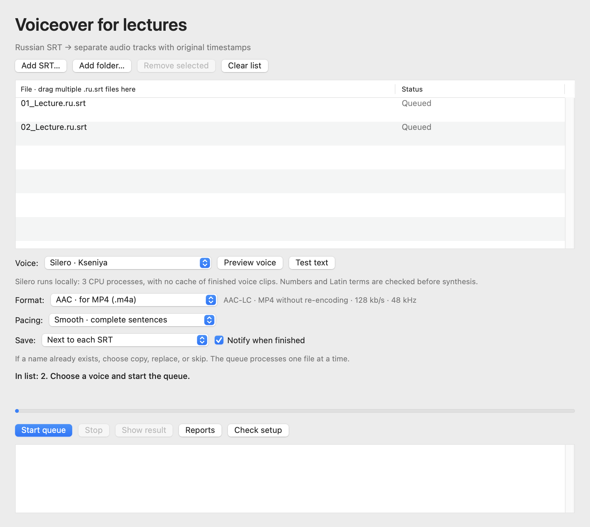

macOS 15+ · Apple Silicon
SRT to Sound
Create synchronized Russian narration from finished SRT subtitles as M4A or WAV.
Release · 3.5.0Before you startInstall Python 3.12 ARM64, FFmpeg, Silero packages and v5_5_ru.pt separately; they are not bundled. Not notarized by Apple.


How it works
- Open SRT
- Synthesize speech
- Save M4A / WAV
First steps
Extract the app and complete dependency setup in the guide first. Add .ru.srt files and choose voice, format and output folder.